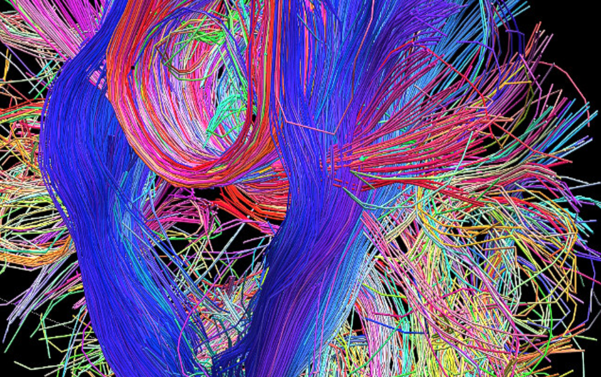
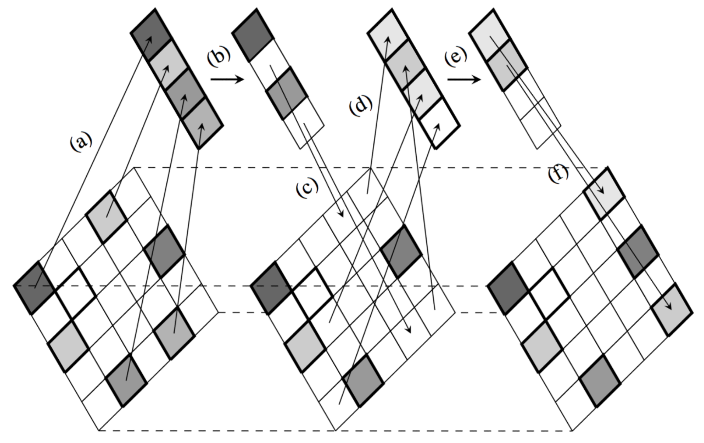
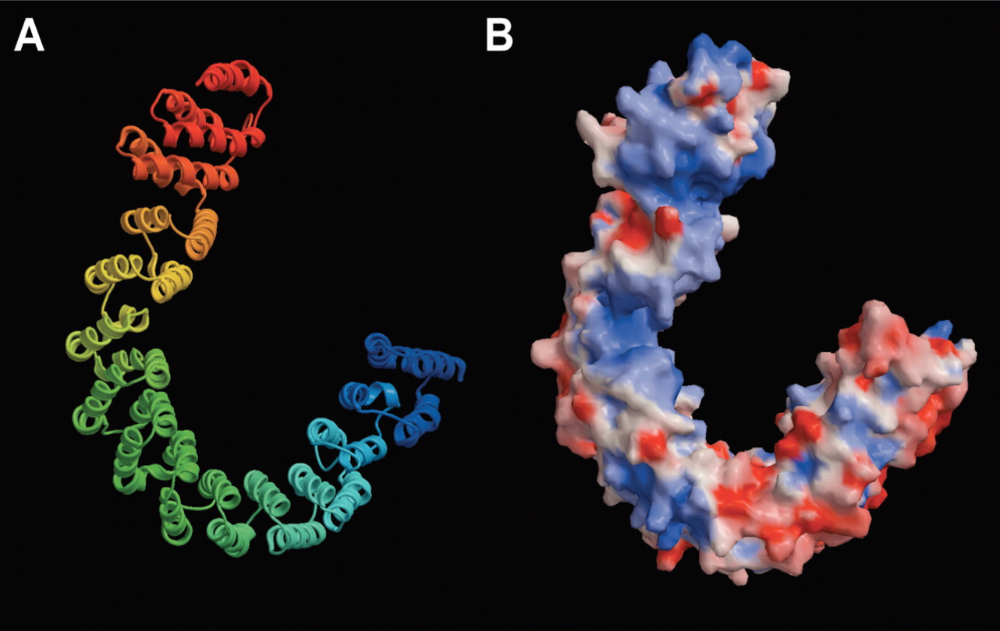
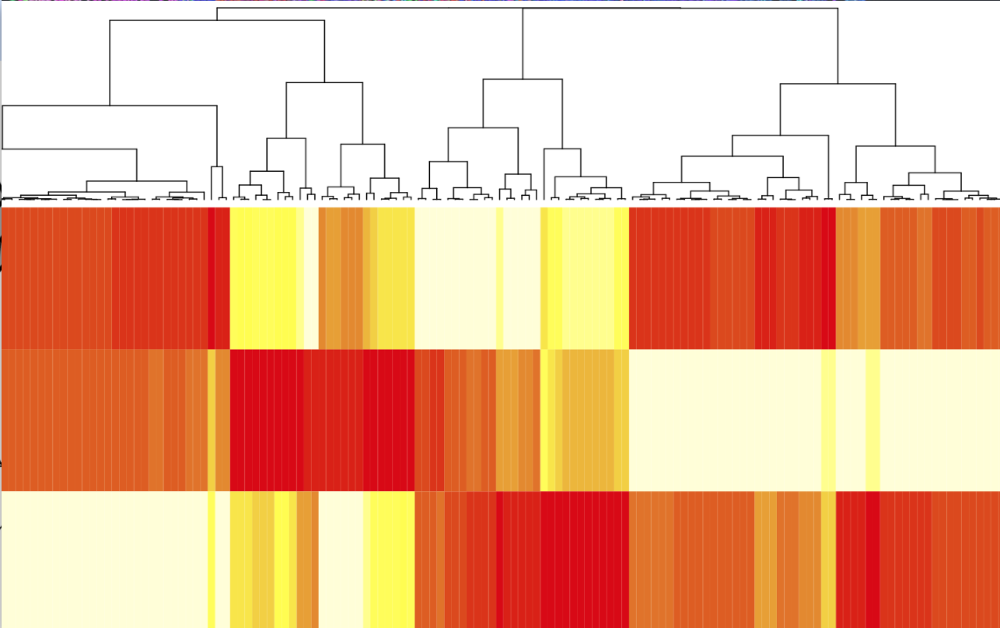
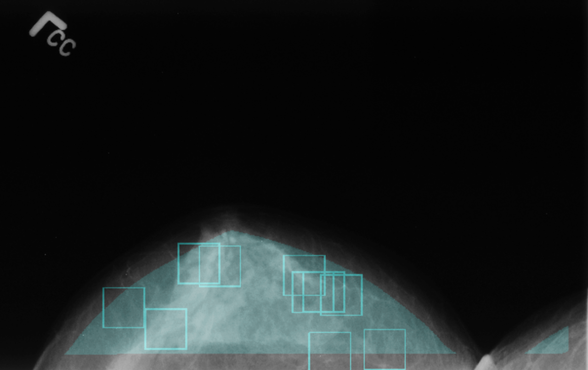
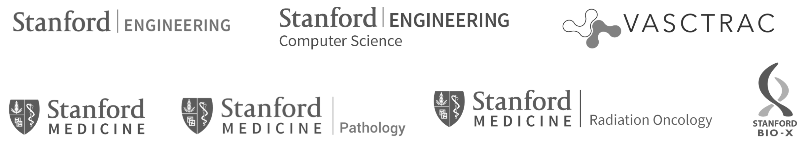

We connect Stanford students to high-impact projects.
We connect students in computer science, mathematics, physics, statistics and other quantitative fields to high-impact projects. Students provide much needed expertise while gaining valuable experience with real-world projects.
to hear about new projects.
Interested in providing a project? Submit .
Have questions or want to work with us? Reach us at .





Partners

Leadership
President Mika Sarkin Jain
Vice President Tom Pritsky
Outreach Matthew Prospero, Neha Srivathsa, Levi Lian, Jack Lindsey, Stelios Serghiou
Faculty Advisors Professor Tarik Massoud, Professor Oliver Aalami
NEW Self-Designed Projects 2019–2020
Design a project alongside faculty and researchers.
Healthcare AI/ML Collaboratory in Cardiovascular Medicine
Division of Cardiovascular Medicine, Department of Medicine, Stanford
Interested in a collaboratively-developed project in cardiovascular medicine under guidance from Stanford Medical School faculty? Apply here to work with a faculty/fellow mentor to design a project from the ground up. Faculty mentor/advisors will assist student team conceptualize and design a project that is highly problem-focused and medically relevant from conception to completion. Depending on outcome of the class project, options for continuation of the project beyond a single quarter can be arranged. Ultimately, the goal will be to develop a AI/ML solution to a real-world biomedical/healthcare problem that can be implemented in near term. Commitment of one quarter or longer, depending on outcome. Students who are interested AI/ML projects in clinical area outside of cardiovascular medicine may also be considered on a case-by-case basis.
Open Projects 2019–2020
Join a prexisting project in collaboration with faculty and researchers.
Prostate Cancer Grading on Histopathology Images
Department of Radiology
Although radiology images, such as MRI, are very useful to identify suspicious lesions, tissue samples from biopsy or surgery, remain the only way to diagnose cancer. A pathologist visually inspects the histopathology images of the tissue sample and assesses the presence of cancer, thereby diagnosing the disease, and categorizes its aggressiveness by providing a grade. There is a need to automate the diagnosis and grading of prostate cancer on histopathology images to limit the subject interpretation of images and allow for high throughput annotation of histopathology images. This project will use public data release as part of a MICCAI challenge and will focus on developing deep learning methods to distinguish different grades of prostate cancer based on histopathology images. The dataset includes 244 images with Gleason grades regional labels provided by 6 pathologists. Data and additional information: https://gleason2019.grand-challenge.org/
Prostate Cancer Detection on MRI
Department of Radiology
Despite technical advancements in the diagnosis and treatment of prostate cancer, it remains the most common and the second most deadly cancer in men in US [1]. MRI plays an essential role in the diagnosis of prostate cancer, yet the radiologists’ interpretation of the MRI images has a relatively high sensitivity, 0.85-0.95, yet a reduced specificity, 0.71-0.75, to detect prostate cancer. There is a need to develop advanced machine learning methods to accurately detect cancer on MRI. This project will use public data released as part of the prostateX challenge and will focus on developing deep learning methods to distinguish benign conditions (non-cancer) from cancer on multi-parametric MRI. The training dataset includes 204 patients with 331 findings categorized as cancer or benign. Data and additional information: https://wiki.cancerimagingarchive.net/display/Public/SPIE-AAPM-NCI+PROSTATEx+Challenges#28ab80368ed440fb9a26afa8bbef487a.
Development of Brain-Based Biomarkers for Pain
Division of Pain Medicine, Department of Anesthesiology, Perioperative and Pain Medicine
There is an urgent need for the development of biomarkers of chronic pain to better predict (1) the best treatment response for an individual patient; and (2) whether a person’s pain will improve or worsen over time. We have been developing neuroimaging-based biomarkers of chronic pain and amassed a large dataset of brain and spinal cord neuroimaging scans of people with chronic pain and matched healthy controls. There are multiple projects involving the use of traditional and machine learning approaches for the development of prediction models. We ultimately wish to translate this knowledge into clinical decision support tools to realize the vision of precision pain medicine where can provide the best treatment for a particular patient under a specific circumstance. For those interested in applying to medical school or a health related PhD program, we have a long experience with providing shadowing at the Stanford Pain Management Center. We can help with applications and have a long track record in helping students get accepted into these programs. Furthermore, plenty of opportunities for students to either lead or participate in projects leading to a manuscript publication. For more information on our research group please go to: http://snapl.stanford.edu
Optimizing Patient Care and Innovative Research Using an Open Source Learning Healthcare System
Division of Pain Medicine, Department of Anesthesiology, Perioperative and Pain Medicine
Chronic pain is an astounding problem affecting 100 million Americans and costing our country half a trillion dollars per year. One of the major challenges in understanding and treating pain is the need for better quality data. To address this problem, the National Academy of Medicine (NAM) called for the development of learning healthcare systems (LHSs) which bring together clinicians, scientists, and patients work together to capture high-quality data. In essence, to turn our clinics into research labs where every patient encounter is deeply characterized. To answer this call from the NAM, we developed CHOIR (http://choir.stanford.edu) as an open-source (free) LHS. Since its introduction in 2012, we have collected many 10’s of thousands of baseline and longitudinal data on real-world patients with pain (and other health conditions). We have also implemented CHOIR in multiple academic institutions in the US, Canada and Israel. Our ultimate goal is to realize the vision of precision pain medicine where can provide the best treatment for the particular patient under a specific circumstance. Furthermore, all development efforts serve to benefit the other clinical specialties also using CHOIR. Multiple projects including machine learning, data visualization and platform development are provided in the apply link.
Mignot Lab: Proteomics in the CSF and Blood in Relation to Sleep Disorders
Center for Narcolepsy, Stanford Medicine
The Mignot lab studies sleep and sleep disorders and we are analyzing large amounts of proteomic data (1,100 to 5,500 proteins) in the blood or CSF of patients with various pathology, together with genome wide association and exome sequencing data. Goal is to link genetic to protein to disease. This project requires knowledge of genetic analysis and associated statistics. Applicants who lack specialized skills in genetic analysis and statistics may still apply if they indicate willingness to commit for multiple quarters. This will allow time for mentorship and a significant contribution to the lab. Python programing needed.
Mignot lab: Immunogenetics and Immunology of Narcolepsy
Center for Narcolepsy, Stanford Medicine
Narcolepsy is an autoimmune disease, and we conducted genome wide association in over 5000 cases and exome sequencing data in many familial cases. The disease appears to be a T cell mediated attack on hypocretin neuron elicited by a cross-reactivity with a flu antigen. Project involves data analysis of work with T cell, Fluorescence cell sorting (FACS), sequence analysis. This project requires either (1) hands on wet lab immunology or (2) knowledge of genetic and sequence analysis and associated statistics with python programing needed. Applicants who lack specialized skills in wet lab immunology or genetic analysis may still apply if they indicate willingness to commit for multiple quarters. This will allow time for mentorship and a significant contribution to the lab.
Mignot Lab: Genetics and Pathophysiology of NMDA Encephalitis and Brain Paraneoplastic Syndromes
Center for Narcolepsy, Stanford Medicine
NMDA encephalitis is an autoimmune disease characterized by psychosis and seizure. It can occur in the context of ovarian teratomas, although more often it is not associated with any tumor. Other paraneoplastic syndrome we study are ataxias or other brain encephalitis. We conducted genetic analysis on large number of cases and have findings indicating specific immunological mechanism that need to be followed up through additional genetic analysis such as HLA imputation or immunological studies. Applicants who lack specialized skills in genetic analysis and statistics may still apply if they indicate willingness to commit for multiple quarters. This will allow time for mentorship and a significant contribution to the lab. Python programing needed.
Mignot Lab: Pathophysiology, Genetics ad Clinical Studies in Klein-Levin Syndrome (KLS)
Center for Narcolepsy, Stanford Medicine
This is a rare syndrome affecting children or adolescent, generally males, and characterized by periodic episodes of profound hypersomnia (sleep>20 hr/day) with cognitive abnormalities (derealization, sexual disinhibition, megaphagia). Nothing was known about this syndrome, but through a long and painful process we have created a database of over 800 subjects and are a center of excellence for this disorder. We conducted genetic analysis and found genes involved to be associated with bipolar disorder and circadian abnormalities. Biomarker studies also suggest an inflammatory process. Applicants who lack specialized skills in genetic analysis and statistics may still apply if they indicate willingness to commit for multiple quarters. This will allow time for mentorship and a significant contribution to the lab. Much remains to be done, from clinical intervention studies, to behavioral observation studies to pathophysiological studies.
Mignot Lab: Machine Learning for Automated Scoring of Polysomnography Studies
Center for Narcolepsy, Stanford Medicine
We have gathered thousands of polysomnography studies are conducting machine learning studies to score recordings automatically (supervised machine learning) , linking this data with genetics (genome wide association) or phenotype (various disease and sleep disorder). We have a team of 3-5 electrical engineers working on this and numerous projects in this space. Requirement is ability to finish a project that is not just a demonstration project but creates something that can be built upon and includes a publication. Python programing needed.
Gene Expression Data Organization and Mining
Human Immune Monitoring Center, Institute for Immunity, Transplantation, and Infection
The Human Immune Monitoring Center (HIMC) has generated gene expression data from blood cells for hundreds of healthy individuals across a range of ages, in studies profiling healthy immunity and response to influenza vaccination. Our online database, Stanford Data Miner (SDM), was recently updated to allow upload and mining of such data. This project would involve: (1) formatting existing data using an R script so that it is compatible with SDM and contains the relevant subject IDs; (2) upload of the data and mapping to subject IDs in SDM; (3) quality control and visualization of the uploaded data using novel tools in SDM; and (4) potentially defining new metrics of healthy blood gene expression from the uploaded data. Experience with running R scripts is needed, and experience with databases in general would be helpful. Academic credit can be arranged, and a commitment for 2 quarters is preferred.
Machine Learning to Predict Cardiovascular Disease
Stanford University School of Medicine
Corneal Arcus (CA - a white ring around the edge of the iris) has been correlated with high cholesterol particularly in younger people but not yet with coronary calcium scores. In our project, we will be recruiting subjects who have had their coronary calcium CT scans already done to capture photos of their irises using their phones. We will then correlate the presence and severity of CA with cholesterol, coronary calcium and diabetes. We will then train a deep learning model to predict cholesterol and coronary calcium from iris photos captured on smartphones.
IMPACT Study
Stanford Center for Asian Health Research and Education (CARE)
The Initiate and Maintain Physical Activity in Clinics (IMPACT) study is a 2.5-year study designed to examine the efficacy of structured exercise programs offered in the clinic setting to help patients manage their type 2 diabetes and meet exercise recommendations. Patients are assigned into one of three arms: weekly exercise 1x, 3x, or 0x (usual care). The goal is to determine which exercise regimen will most help patients adhere to exercise and lower their HbA1c values. This lab offers opportunities to conduct patient clinical visits, author papers and grants, and more.
STRONG-D Study
Stanford Center for Asian Health Research and Education (CARE)
Normal weight individuals with type 2 diabetes (NWD) have higher risk of mortality than overweight or obese individuals. NWD may have less lean muscle mass in proportion to adipose tissue, which may contribute to this higher risk of mortality. Strength training increases muscle mass rather than reducing body weight and can combat the age-related shift in body composition that results in higher fat mass and decreased muscle mass (i.e., sarcopenia). Thus, strength training may therefore be helpful for NWD rather than weight loss, as is recommended for overweight/obese individuals with type 2 diabetes (T2DM). The goal of the Strength Training Regimen fOr Normal weiGht Diabetics (STRONG-D) Study is to determine the best exercise regimen for NWD, who experience greater mortality than overweight/obese diabetics. Patients are randomized into one of three arms: Strength, Aerobic, or Combo. This lab offers opportunities to conduct patient clinical visits, author papers and grants, and more.
Functional Ca2+ Image Analysis based on In Vivo Cochlear Hair Cell Imaging
Stanford, Department of Otolaryngology Head & Neck Surgery
In vivo imaging with cellular resolution enables us to identify and characterize receptive field properties of a sensory system. However, cochlear in vivo imaging remain challenging, owing to not only its deep location but also bony structure filled with fluids. The goal of our project is to develop in vivo cochlea imaging to characterize how sound is transferred across sensory hair cells. So far, we’ve developed a method to resolve individual cochlear hair cells with hearing function in live mice, and are collecting functional data. We are looking for a keen research assistant at any level that is eager to learn, well organized, and that can help out with research studies on an ongoing basis. Coding skill would be preferred. This position can be for undergraduate credit or a paid position.
Machine Vision for the Neural Basis of Social Interactions
Stanford Department of Neurobiology
Understanding the neural basis of social interactions remains one of the great mysteries of modern neurobiology with profound implications for basic science and neurological and psychiatric applications. This project seeks to parse videos of interacting animals into a set of behavioral building blocks tied to both individual animal actions and group dynamics. Our goal is to combine multiple deep learning approaches including convolutional neural networks and recurrent neural networks or attention-based sequence models. As a second stage the dynamics of behavior revealed by the developed algorithms will be related to neural recordings and video processing will be adapted for real-time analysis.
This project requires a two quarter minimum commitment.
Single Cell Transcriptomics of Tumor and Immune Biology
Stanford Pathology Department and VA Medical Center
Single cell RNAseq is an emerging technology that allows us to examine expression of all genes by thousands of cells, yielding unparalleled insights into cell biology, communication and responses. The Butcher lab is using scRNAseq to understand vascular and immune system responses and interactions in cancer and inflammation. Student(s) will help improve existing tools for analysis and visualization of the massive data sets generated, and will help develop and apply novel algorithms for probing cell-cell interactions, gene and communication networks. Projects will involve coding, data analysis and biological knowledge application and discovery. Opportunities for publication and credit.
Early Detection of Cerebral Ischemia
Stanford Center for Biodesign
Our project focuses on enabling the early detection of ischemic stroke in high-risk patients to increase access to life-saving treatments and reduce the disability and mortality associated with these often devastating events. We are looking for 2 talented students to assist us in the process of implementing state of the art algorithms for the processing of EEG signals and to contribute in the development of new methods and models for detecting cerebral ischemia. Must have: Passion to address unmet clinical needs, Fluency in Matlab and/or Python. Nice to have: Prior experience with the Matlab Fieldtrip & EEGLAB toolkits and/or the Python MNE-Python. For more information, or to express interest, reach out to orvar@stanford.edu or ayo.roberts@stanford.edu.
Opioid Safety: Personalizing Prescribing to Reduce Misuse
Stanford University, Center for Population Health Sciences; Biomedical Data Science
How many opioid pills should a doc prescribe for a patient in pain after back surgery or knee replacement? Does it vary by gender or age? Opioids have run rampant in the US with some US states reporting more opioid prescriptions each year than residents. In 2016, over 64,000 Americans died from overdoses, 21 percent more than the almost 53,000 in 2015. If not remediated, public health experts estimate that nationwide over 500,000 people could die from the epidemic over the next 10 years.
How can we ensure the safe and effective prescribing of one of the most effective medicines doctors have? We seek to inform the current discussion on opioid prescribing guidelines by using a range of analytic techniques to explore the relationship between pre-surgical patient characteristics, opioid use profiles and adverse opioid outcomes.
Multi-Morbidity Clusters Associated with Mortality
Stanford University, Center for Population Health Sciences; Biomedical Data Science
Danish population healthcare data is considered the "test tube" for observational health analyses. Using a nationally representative sample of Danish residents, this work seeks to use unsupervised learning methods and data visualization techniques to examine multi-morbidity complexes that are strongly associated with one and five year mortality. Such insights can be used in a wide range of applications from drug design to policy making. The data has already been cleaned, processed and is ready for analysis in feature matrices.
Computer Vision for Post-Surgical Wound Surveillance
Stanford Medical School, Vascular Surgery
Post-operative wound infections occur between 2% and 15%, depending on the surgery. This is considered a “never-event” and CMS does not reimburse the treatment of such complications- similar to re-admissions which occur within 30-days of a procedure. There is great benefit to identifying signs of infection early for early intervention before the typical 1-week follow up. We have an IRB approved study to collect photos from wounds from post-op day 0 through post-op day 7 which we label and have the ability to run computer vision algorithms on. In addition to early wound infection detection we are very very interested in the art of taking a photo and converting that to a “structured report” that we would use for documentation in the electronic medical record as this is what is critical for billing. In addition we have the opportunity to gain access to daily photos of patients in the ICU as well as in their rooms to automate the process of generating structured reports for documentation. An example would be, “Patient is asleep, intubated with naso-gastric tube in place.” Two quarter minimum engagement (Summer internship an option)
Automated Carotid Ultrasound Screening Using Deep Learning
Stanford Medical School, Radiology
Carotid ultrasound is a high volume screening tool to evaluate patients for stroke risk scoring. We have labeled datasets (performed by the interpreting radiologist) for normal/abnormal cases and detailed structured labels from the report dictation.
Clinical Validation of a Passive Mobile Activity Tracking Algorithms to Assess Functional Capacity in Cardiovascular Disease Patients
Stanford Medical School, Vascular Surgery
We are several years into developing a mobile research app to study and clinically validate activity tracking using a patient’s personal mobile device +/- a smart watch. In addition to getting passive daily activity data (max steps without stopping, total daily steps, flights climbed) we also have high frequency (100Hz) raw accelerometer data and heart rate data for 6-minute walk tests in well characterized patients pre- and post- interventions. We are looking for 1) response curves in activity patterns to interventions, 2) characteristics in passive metrics relative to clinical state, and 3) correlation of passive activity to 6-minute-walk-test results among other things. We have data not only form our own studies here but also from a collaborative study with a large pharmaceutical company. Two quarter minimum engagement (Summer internship an option)
Therapeutic Radiation Technology
Zap Surgical Systems, Inc.
Zap Surgical Systems, Inc. is a San Carlos, CA-based developer and manufacturer of a new generation of stereotactic radiosurgery systems. Zap Surgical Systems set out to create a first-of-its-kind therapeutic radiation technology that would be “self-shielded” and not require a radiation therapy vault under most circumstances. Another critical company goal was to invent a device that met or exceeded the best quality standards of existing radiosurgical instruments, i.e. there would be no compromise in terms of performance. It remains the goal of Zap Surgical Systems to provide the above revolutionary technology at the lowest possible price; the general benchmark the company has set for itself is that the cost of ownership worldwide should be approximately one-third the cost of competing radiosurgical modalities. Zap is engaged in active research on new uses for stereotactic radiosurgery. One of these is “radiomodulation,” precise, noninvasive modulation of dysfunctional brain circuits.
Selective Plane Illumination Microscopy (SPIM)
Stanford Medical School, Cardiovascular Medicine
Student(s) will assist in completing microscope hardware construction, including optomechanical integration, laser beam alignment, and computer/software integration, following the openspim design (http://openspim.org/Welcome_to_the_OpenSPIM_Wiki). After hardware construction, student(s) will create a pipeline for storing/retrieving images, videos, and associated data on Amazon Web Services (AWS) and for image processing/analysis of images, videos, and data. The data set sizes will range from a few GB upwards to TBs. Images and videos will be primarily from human pluripotent stem cell-derived tissues and organoids, along with rodent hearts and blood vessels. Experience with both hardware and software is preferred. A time commitment of at least two quarters (research credit can be arranged) is also preferred.
Optical Mapping Microscopy for Arrhythmia Research
Stanford Medical School, Cardiovascular Medicine
Student(s) will assist in completing microscope hardware construction, including integration of a high speed camera, high power LEDs, a video projector for spatial optical illumination, optics, and a motorized XY stage. After hardware construction, student(s) will create a pipeline for storing/retrieving images, videos, and associated data on Amazon Web Services (AWS) and for image processing/analysis of images, videos, and data. Students will create data acquisition software/scripts (in LabView and/or Matlab) that integrate signals from the above devices and instruments (open loop and closed loop systems). Images and videos will be primarily from human pluripotent stem cell-derived monolayer cardiovascular tissue as a model for investigating cardiac arrhythmias. Experience with both hardware and software is preferred. A time commitment of at least two quarters (research credit can be arranged) is also preferred.
Segmentation of Nuclei in Histological Sections
Stanford University, Department of Bioengineering
Automatic segmentation of nuclei is a key step in digital histology. While the problem has been extensively studied, there is no well-established open-source library/network. A successful project might become an essential element of many scientific workflows.
Disease Treatment Proposal
Stanford University, Department of Bioengineering
Design of a system that asks for symptoms. Then, based on symptoms and preprocessed embeddings of diseases (e.g. at https://en.wikipedia.org/wiki/List_of_infectious_diseases) it either diagnoses a disease or if the confidence is low, it asks for more details ("is the rash dark?"). A proof-of-concept exploratory project with many ambitious opportunities depending on interests!
Automatic Evaluation of Burns
Stanford Medical School, Plastic & Reconstructive Surgery
Care of patients with burns is highly specialized and yet initial evaluation and triage of burn patients typically occurs in centers without available burn expertise. We have assembled the largest curated dataset of burn images that have been segmented and classified by experts. During last year’s CS231n we mentored a student who developed a pixel-lever classifier to evaluate burn size and depth. Our future work includes at least two opportunities: (1) develop a classifier for normal unburned skin, which will result in a clinically useful tool that could have exciting implications for initial treatment of these critically ill patients and (2) evaluate the effect of skin tone on performance of our classifier, whether underrepresentation of certain skin tones introduces bias and impairs performance of the classifier for certain patients, and explore opportunities to enhance performance for underrepresented groups. While we cannot provide computer science expertise, we worked very closely with our student last year to provide medical subject matter expertise, which resulted in a successful project that currently is in preparation for submission to a medical journal.
Receptive Field Mapping
SLAC National Accelerator Laboratory
Given a neural network trained on an image recognition task, map out the regions of input space to which each neuron responds. Our approach uses nonlinear programming to solve this as a mathematical optimization problem. Or replace “image recognition task” with the task of your choosing.
Neural Network Quality Metrics
SLAC National Accelerator Laboratory
Given a trained neural network classifier, what is the rate of false positive classification? Can a statistical regularizer reduce the rate of false positives? False negatives?
Spectral Analysis of Neural Networks
SLAC National Accelerator Laboratory
Given a trained neural network, what can be learned from examining the eigenvectors and eigenvalues of the weight matrices, and the Lyapunov exponents of the network? Can these measures be related (possibly by using machine learning) to the network quality metric and the receptive field maps?
Neural Network Explanations
SLAC National Accelerator Laboratory
Given a trained neural network, generate an English language description of network decisions. The approach is to use machine learning based on the information from the preceding three projects.
Inferring Patient Outcomes from Healthcare Variables
Stanford University, Department of Anesthesiology
Use existing healthcare insurance claims data to investigate the association between healthcare variables and patient outcomes (datasets contain 10s -100s of millions of patients).